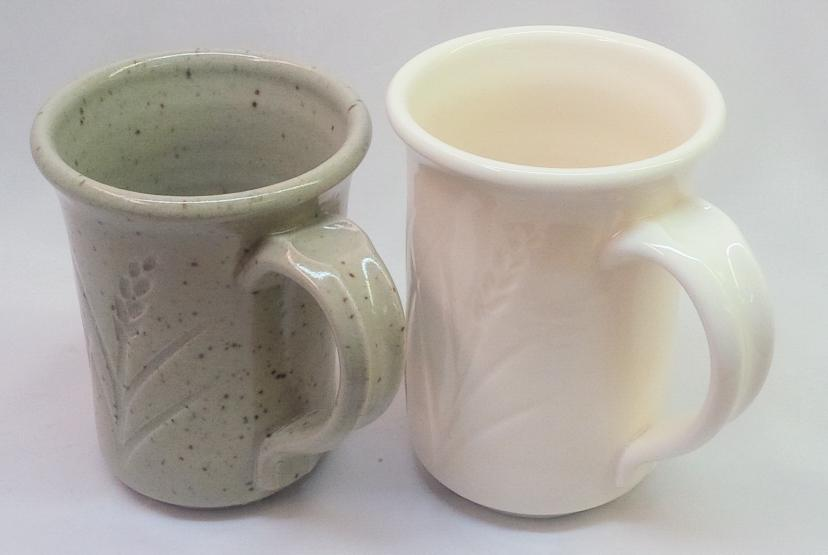
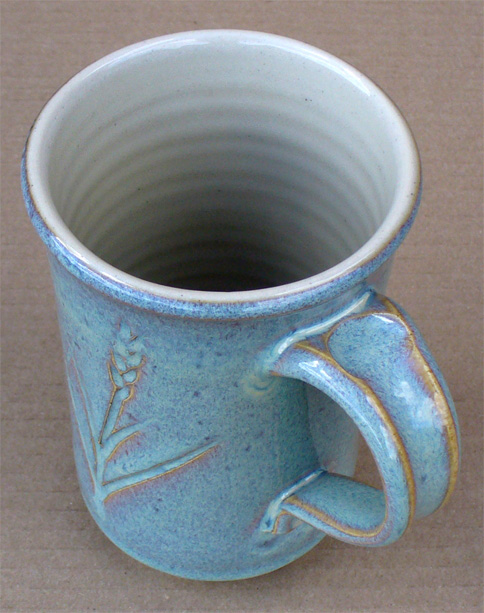
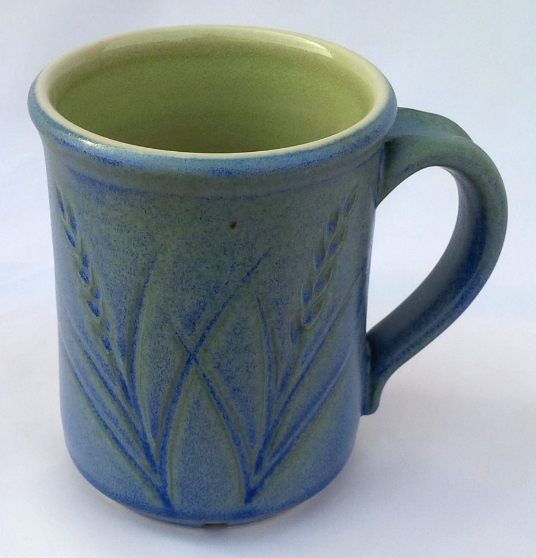

A Low Cost Tester of Glaze Melt Fluidity
A One-speed Lab or Studio Slurry Mixer
A Textbook Cone 6 Matte Glaze With Problems
Adjusting Glaze Expansion by Calculation to Solve Shivering
Alberta Slip, 20 Years of Substitution for Albany Slip
An Overview of Ceramic Stains
Are You in Control of Your Production Process?
Are Your Glazes Food Safe or are They Leachable?
Attack on Glass: Corrosion Attack Mechanisms
Ball Milling Glazes, Bodies, Engobes
Binders for Ceramic Bodies
Bringing Out the Big Guns in Craze Control: MgO (G1215U)
Can We Help You Fix a Specific Problem?
Ceramic Glazes Today
Ceramic Material Nomenclature
Ceramic Tile Clay Body Formulation
Changing Our View of Glazes
Chemistry vs. Matrix Blending to Create Glazes from Native Materials
Copper Red Glazes
Crazing and Bacteria: Is There a Hazard?
Crazing in Stoneware Glazes: Treating the Causes, Not the Symptoms
Creating a Non-Glaze Ceramic Slip or Engobe
Creating Your Own Budget Glaze
Crystal Glazes: Understanding the Process and Materials
Deflocculants: A Detailed Overview
Demonstrating Glaze Fit Issues to Students
Diagnosing a Casting Problem at a Sanitaryware Plant
Drying Ceramics Without Cracks
Duplicating Albany Slip
Duplicating AP Green Fireclay
Electric Hobby Kilns: What You Need to Know
Fighting the Glaze Dragon
Firing Clay Test Bars
Firing: What Happens to Ceramic Ware in a Firing Kiln
First You See It Then You Don't: Raku Glaze Stability
Fixing a glaze that does not stay in suspension
Formulating a body using clays native to your area
Formulating a Clear Glaze Compatible with Chrome-Tin Stains
Formulating a Porcelain
Formulating Ash and Native-Material Glazes
G1214M Cone 5-7 20x5 glossy transparent glaze
G1214W Cone 6 transparent glaze
G1214Z Cone 6 matte glaze
G1916M Cone 06-04 transparent glaze
Getting the Glaze Color You Want: Working With Stains
Glaze and Body Pigments and Stains in the Ceramic Tile Industry
Glaze Chemistry Basics - Formula, Analysis, Mole%, Unity
Glaze chemistry using a frit of approximate analysis
Glaze Recipes: Formulate and Make Your Own Instead
Glaze Types, Formulation and Application in the Tile Industry
Having Your Glaze Tested for Toxic Metal Release
High Gloss Glazes
Hire Us for a 3D Printing Project
How a Material Chemical Analysis is Done
How desktop INSIGHT Deals With Unity, LOI and Formula Weight
How to Find and Test Your Own Native Clays
I have always done it this way!
Inkjet Decoration of Ceramic Tiles
Is Your Fired Ware Safe?
Leaching Cone 6 Glaze Case Study
Limit Formulas and Target Formulas
Low Budget Testing of Ceramic Glazes
Make Your Own Ball Mill Stand
Making Glaze Testing Cones
Monoporosa or Single Fired Wall Tiles
Organic Matter in Clays: Detailed Overview
Outdoor Weather Resistant Ceramics
Painting Glazes Rather Than Dipping or Spraying
Particle Size Distribution of Ceramic Powders
Porcelain Tile, Vitrified Tile
Rationalizing Conflicting Opinions About Plasticity
Ravenscrag Slip is Born
Recylcing Scrap Clay
Reducing the Firing Temperature of a Glaze From Cone 10 to 6
Setting up a Clay Testing Program in Your Company or Studio
Simple Physical Testing of Clays
Single Fire Glazing
Soluble Salts in Minerals: Detailed Overview
Some Keys to Dealing With Firing Cracks
Stoneware Casting Body Recipes
Substituting Cornwall Stone
Super-Refined Terra Sigillata
The Chemistry, Physics and Manufacturing of Glaze Frits
The Effect of Glaze Fit on Fired Ware Strength
The Four Levels on Which to View Ceramic Glazes
The Majolica Earthenware Process
The Potter's Prayer
The Right Chemistry for a Cone 6 Magnesia Matte
The Trials of Being the Only Technical Person in the Club
The Whining Stops Here: A Realistic Look at Clay Bodies
Those Unlabelled Bags and Buckets
Tiles and Mosaics for Potters
Toxicity of Firebricks Used in Ovens
Trafficking in Glaze Recipes
Understanding Ceramic Materials
Understanding Ceramic Oxides
Understanding Glaze Slurry Properties
Understanding the Deflocculation Process in Slip Casting
Understanding the Terra Cotta Slip Casting Recipes In North America
Understanding Thermal Expansion in Ceramic Glazes
Unwanted Crystallization in a Cone 6 Glaze
Using Dextrin, Glycerine and CMC Gum together
Volcanic Ash
What Determines a Glaze's Firing Temperature?
What is a Mole, Checking Out the Mole
What is the Glaze Dragon?
Where do I start in understanding glazes?
Why Textbook Glazes Are So Difficult
Working with children
Concentrate on One Good Glaze
Description
It is better to understand and have control of one good base glaze than be at the mercy of dozens of imported recipes that do not work. There is a lot more to being a good glaze than fired appearance.
Article
New potters face soon find that they stand at a fork in the road when it comes to glazes. They can go down the premixed glazes route, buying little expensive jars and painting them on. It is convenient. The glazes may, by accident, fit the clays they are using. But it takes a long time to get anything done.
There is another road: Become a recipe junkie and test tons of recipes you find on Facebook, hoping that a few will be just what you need; they will suspend and apply well, be made from easy-to-get materials, fit your clay (not crazing or shivering), they will not leach or run or blister or bubble-cloud or crawl or pinhole and they will look good despite different thicknesses and be consistent over time. But let us be real, how likely is this to happen?
The third road is where you develop your own glazes. This road starts out slower, but gives you a level of control that you could not hope to have using the other options. This road has lots of little detours where you can constantly learn deeper issues to get even better control (for example, chemistry and how it relates to the way glazes fire, how to fine-tune a slurry to make it apply really well, how to identify the mechanisms of recipes (to be able to transplant them to other recipes). It is one where the better you document your testing the more you will learn (a lot can be learned when you document things that did not work). Documentation includes recipes, firing schedules, usage information, pictures, material information, speculation related to results, suggested changes, etc. The best place to do this is in an account at insight-live.com.
Maybe it is about expectations. Are you going to be a hobbyist at an art center and make a few pieces on weekends? Then the prepared glaze route might be the best. But if you are serious, the real choices are the "glaze recipe junkie" and "need-to-know-only" routes or the "want-to-understand" route (I trust you are sensing some bias!). No one is asking every glaze user to become a scientist. But there is a need to understand glazes better, this is in the interests of the customer and the manufacturer alike. When you begin to feel the control that a better understanding gives, your demands on the final result will likewise increase. You will notice issues with your glazes that you did not notice before. Better quality will follow.
What is necessary to produce a quality product at the lowest practical cost in terms of effort, time, and money? I personally grew tired of using fifty different recipes, each of which were deficient in one or more ways. As much as possible, I now feel that my efforts should be directed toward developing a quality base matte and glossy glaze for each temperature range I work at, I can then modify these as needed. Far better to understand these and keep perfecting them than tolerate fifty others that are never quite right (or worse yet, have a database of 500 I could never possibly control).
You might be thinking right about now: 'How can I modify the same base to make a shino or crater glaze, the two are fundamentally different!'. True, there are many special-purpose glazes and we need to be reasonable. I am talking about the glazes you use large quantities of, the ones you put on your bread-and-butter production functional ware. However, do not underestimate how many effects are possible with just one base recipe (e.g. variegation, crystallization, opacification, coloration).
What I Want in a Glaze
Here are some of the properties I want from a base glaze. In this particular case, it will be useful for functional ware on stoneware or porcelain. You are probably thinking that I am living in a dream world with this many expectations. I treat them as goals to be pursued and it is surprising how many can be achieved with little trouble.
Fires as Low as Possible
Many people assume that high-temperature firing is necessary for ware that is strong and durable, not so. Fired strength is a product of the body's maturity. Maturity means that significant glass development has occurred and that the body is dense (as demonstrated by low measured porosity). Above Orton cone 04, low maturing clays and fluxes are available to make a vitrified body (in some cases the flux may need to be a frit). Conversely, cone 10 bodies can be lacking in flux (e.g. iron brown speckle stoneware, fireclay bodies), they can be relatively weak! Glazes are more difficult to fit at lower temperatures, but it is certainly possible using low expansion frits.
Adjustable
For a glaze to act as a base to be used in all sorts of circumstances, it needs some adjustability. As already stated, the most common glaze problem is body fit (tendency to craze or shiver). Ware strength and fired quality are fundamentally affected by this property. Lead was so popular because it has a low expansion and is an extremely active and effective flux. In years past, it seemed like the perfect answer to optimizing firing temperature and dealing with crazing. Now that we have learned the hard way, preventing crazing is a matter of minimizing high expansion oxides of (e.g. sodium and potassium) in favour of their low expansion counterparts and using as much SiO2 and Al2O3 as possible.
Also, the use of boron (B2O3) is invaluable to fuse a glaze at a lower temperature while keeping its expansion down and silica up. The perfect base glaze should allow for adjustment in the SiO2 , B2O3 , or Al2O3 content without adversely affecting visual character. It should not depend on high soda or potassium oxide content (making it a likely candidate for crazing). For example, if you see 40 or 50% feldspar in a glaze, you can be sure it is going to craze. The same can be said for solving shivering problems, can it be moved toward higher expansion?
Another critical area is the glaze's suspension and drying properties. Does it have enough clay to suspend it. If not, can it be adjusted to source Al2O3 from extra clay rather than frit or feldspar?
What about its maturity? Can the recipe be altered to move the melting point up or down without disrupting other properties too much? Or is it a "one temperature glaze?" Or is it a "one man glaze" due to its touchy nature? How about the gloss? Can this be adjusted to produce a matte or semi-matte and is the method of adjustment, which is sometimes less than obvious, documented?
As Little Boron-sourcing Materials as Possible
Frit is expensive, not to mention difficult to get at times. Ideally, high-temperature glazes should be frit-free, there are plenty of fluxes at cone 10, you do not need any boron. As firing temperature is reduced from cone 10, material choices narrow to those which are much higher in flux. Unfortunately, the money saved on the glaze itself can quickly be spent on higher reject rates and periods of crisis in production. Thus, there is a balance.
It is not surprising that the best industrial glazes are fritted. At the same time, potters and smaller companies frequently achieve unique effects imparted only by raw materials. Armed with the formula viewpoint, made possible by glaze chemistry, it is possible to at least minimize the frit in low and medium temperature glazes. Many have found it a good compromise to employ frits mainly for B2O3 , since raw materials which source this oxide (e.g. Gerstley borate) are unreliable or insoluble. At cone 6, for example, it should be possible to keep the frit content below 25%.
Uses Common Materials
Forget about using exotic and hard-to-get materials unless they are employed in smaller quantities to produce a specific effect. If production depends on a hard-to-get material, then you will be shut down if your supplier is out-of-stock. Make each hard-to-get material in the glaze justify its existence in favor of an easier-to-get and more economical one. As an example, consider a glaze having an expensive opacifier. How about creating a base that hosts micro-bubble or boron blue clouding, it will take less opacifier. The same goes for frits, expensive feldspars, stains, etc. Learn to use glaze chemistry to give you the flexibility of sourcing the same oxides from a mix of other materials.
Few Bubbles
Most glazes have a network of fine bubbles suspended in the glass. This is sometimes intended and necessary for the desired effect but typically it is just tolerated. The problem is somewhat insidious in that most people do not even know they have it or realize that other problems with glaze surface defects are related to bubbles. If the bubble population could be reduced benefits include fewer surface imperfections, better strength and greatly increased clarity in transparent glazes. If you want a basic glaze to act as a starting point for others of different color, opacity, or surface quality, it makes sense to start with one that is perfectly clear. Bodies can generate a lot of gases on firing, these will need to bubble up through the glaze if it is already melting. Certain glaze materials release considerable levels of gases of material decomposition (CO2 ). For materials like calcium carbonate and dolomite, up to 40% (by weight) of the raw material just goes up the chimney of the kiln, this can contribute to glaze bubbles. Thus, it is often better to source MgO from talc or a frit (than dolomite). And calcia from wollastonite (rather than calcium carbonate).
No Crystals
Crystals can turn an otherwise visually boring glaze into something quite exciting and appealing. They are great when you want them but a real pain when you don't. In many cases, crystals will grow in very small sizes and congregate together to completely cover an area with spots or a dirty-looking patch. This problem can come and go with certain glazes depending on firing schedule, thickness, and particle size. So, it is reasonable to move the chemistry to provide a margin for safety in this area. Provide enough SiO2 and Al2O3 to avoid the high melt fluidity that encourages crystallization (crystal glazes have low Al2O3); watch out for imbalances where certain oxides are at the saturation point (e.g. excessive zinc or titanium) and test fire at a variety of temperatures with slower cooling to emulate a densely packed kiln. Research the kind of chemistry that encourages crystallization and move your formula away from it.
Cooperates With Stains
If the only difference between one line of product and another is the color, then it is logical to use the same proven base glaze on both, adding stains to achieve the desired color. They can be expensive, but then the raw metal oxide systems you would use to create the same color are also expensive (and require more milling and are less consistent). Metal oxides are also more likely to leach and gas (which creates bubbles). Unfortunately, it is not just a matter of putting the stain in any clear glaze and getting the desired color. While some color systems (e.g. cobalt blue, chrome green) are quite stable for diverse glaze types, others are sensitive to the chemistry of the glaze. Certain colors choke in the presence of zinc, others (notably chrome-tin pinks) are sensitive to the amount of calcia and magnesia. Stain manufacturers publish the oxides used in each stain (e.g. chrome-tin pink, manganese-alumina pink) and they provide information on what chemistry a color cooperates with. So why not concentrate development on one good transparent glaze recipe base, which makes allowance for as many of these as possible? Knowing and controlling the chemistry of your base is a huge advantage in controlling color, in ceramics color is about chemistry.
Safe and Balanced
Is your glaze touchy? Does it contain barium? Heavy metals? Is it unbalanced (the percentage of one oxide is much higher than normal)? Does it oxidize during use or aging? Is it matched to your firing temperature, or is it under or over-fired? Who gave you the recipe and do they care about safety and balance or have they publicly stated that aesthetics are all that matters? Many glazes in use by potters and small companies today have never been examined in this respect, they are completely anonymous and undocumented. Even though a chemically unbalanced glaze contains no dangerous materials, the first time someone decides to add a heavy metal colorant there is a problem. As a result, some hard questions are being asked by governments and the public. Think about it for a minute. If your glaze is "touchy", it never looks right unless the temperature, atmosphere, thickness, etc. are just right. If its appearance, which you are closely monitoring, is difficult to control, then what about other properties like solubility, or leaching, which you are not monitoring? Glazes that are touchy are very likely unbalanced chemically? Abnormal. (There are lots of articles on this site about glaze safety and oxide balance).
Many glazes are known to be non-functional. If so, then don't give the recipe to others who will in turn circulate it and quickly lose the non-functional label. In educational institutions, teach the students what chemical balance is, what limit or targets are (or how to compare a glaze side-by-side with one known to be good), how to do the calculations necessary and how to appraise the results. Be sure to document any glaze recipes you give to others. Really, I feel that a glaze recipe is just not fully documented without a report that explains some of the things we are considering here.
For a clear base for functional glazes, it is logical to go with a middle-of-the-road chemistry (the oxide percentages are within ranges common to that type of glaze). This eliminates flux saturated glazes and it requires adequate SiO2 and Al2O3 to produce a strong and full-bodied glass. It is logical to use common materials which do not have a questionable reputation on the matter of glaze safety.
Is it Volatile?
A volatile glaze is like a volatile person. It is fine sometimes but bouncing all over the place at other times. I use the term 'volatile' in contrast with 'touchy' to refer to a glaze that is chemically balanced and safe but exhibits erratic behavior for other reasons. The most common area is narrow range of firing. You can check this by firing the glaze in a flow tester a couple of cones below and above the temperature you are working at. Some glazes are sensitive to thickness of application, ball milling time, brand name of specific materials, firing temperature, cooling curve, application method, etc. For example, a certain property could depend on a unique mineral phase in one material (e.g. it seeds crystal growth), and substitution of other materials to source the same oxides adversely affects that property. A unique distribution of particle sizes could produce an effect that is difficult to maintain. For example, an important flux could be a coarse size, thus slowing its melt time enough to allow higher temperatures at a faster firing rate. Or it could have a particle shape, size or mineralogy that speeds the melting process. Thus, try to be aware of the mineralogical and physical properties of the material and what these might do to increase glaze volatility.
Strong and Durable
A glaze, like a clay body, can be strong or weak. "Cutlery marking" is the term used to describe glazes that are soft and easily marked with metal tableware. While higher temperature glazes are generally harder, it is also true that the high-temperature ones can be soft (where rules of chemical balance are broken) and low-temperature ones can have considerable hardness (when designed and tested carefully). As you can appreciate, this is not a difficult property to test, all of us have hard metal tools we can use to attack a glazed plate to check it. The most common cause of softness in glazes is an imbalance in SiO2:Al2O3 compared with the fluxes. If a glaze lacks SiO2 glass former or Al2O3 to give it body, then it cannot be expected to develop into a hard glass. Moreover, you can also expect problems with hardness in glazes that are over or underfired or lack flux diversity.
A poor fitting glaze can severely affect the strength of tableware, especially when it is applied in a thick layer. A proper fitting glaze, on the other hand, can greatly enhance it. Proper consideration of the chemical balance will produce a glaze with flexible expansion and with a base expansion low enough to avoid crazing on most common clay bodies.
Glossy and Ultra-clear
If the glaze is to be a starting point, then it should be the lowest common denominator, namely, colorless, transparent, glossy, and bubble and crystal-free. It is true that the body can affect whether the glaze is bubble-free or not, but I am working on the basis that we evaluate the glaze on its own merits. If, for example, it is on a clean white porcelain, would it be ultra clear or not?
Documented
- Glaze users should be aware of why each material is there. See a development history that explains where the recipe came from, what adjustments were made and why. Consider a recipe that contains more than one material sourcing a particular fluxing oxide. The user should know why, for example, dolomite, calcium carbonate, and wollastonite are present, all three sourcing CaO. Is it to achieve a special effect rendered by the mineralogy of a material? Is it to diversify sources to achieve better consistency? Or is the recipe simply the product of a line blend between two others and no one has had the time to remove the duplication?
- If the recipe contains expensive alternatives to cheaper materials, why? For example, if tin oxide is used to opacify, have zircon materials been tested and found wanting? If an expensive stain is used for a color, is it the most potent one available? Or are there others that could produce the same color with a lower percentage? Or could a change in the chemistry of the recipe develop better color from the stain?
- If a material is used in abnormal amounts, why? For example, we expect 30 or 40% feldspar in a stoneware glaze but we don't expect 70%. Talc or zinc at 5% is normal but 30% is not. We expect 20% clay so the existence of only small amounts of clay would suggest trouble with a powdery application and difficult suspension in the slurry. 40% almost guarantees cracking (and crawling). Such unusual situations should be documented. Other situations: excessive metal oxide colorants, which could saturate the melt and yield an unstable glass; high sodium minerals, which would cause crazing; high zircon, which can stiffen the melt and produce crawling and surface imperfections.
- If materials are used which seem inappropriate, why? For example, we all expect to see clay in a glaze to act as a suspending agent, plus a source of Al2O3 and SiO2. What if there is 20% clay (which is normally plenty to suspend it) plus 3 or 4% bentonite? What is that bentonite doing there? But what about a brightly colored recipe (having significant stain) that employs ball clay instead of much cleaner kaolin to suspend it? That will muddy the color of the stain. What if there is little or no clay or silica in a middle or high-temperature recipe? This is a definite abnormality that you would want a reason for. The presence of B2O3 materials in high-temperature glazes could be questioned since other much cheaper raw fluxes are very effective. The use of an organic binder, when there is already plenty of clay to provide hardness and suspension, would be unusual and worthy of a reason.
- What happens if the glaze is over or underfired? Has it been checked with a melt flow tester at a variety of temperatures to confirm that it is not too volatile for the recommended range? Or does it turn out perfectly at the intended temperature, but if slightly over or underfired have a completely different appearance?
- What specific gravity should it be mixed to? How does it respond to flocculants to gel it enough to keep it in suspension and give it good application properties?
Has Good Application Qualities
Casual potters are often so preoccupied with fired results that they do not appreciate the importance of a glaze's physical qualities. Industry is painfully aware of their importance. Sometimes the behavior of the glaze slurry is the biggest source of problems in a plant. There are often a wide range of recipes that will yield a given chemistry, so we have considerable flexibility in choosing which source materials are used. A glaze needs, most of all, kaolin content (or ball clay) to suspend the slurry so it does not settle out, and to harden the layer on the ware after application. On the other hand, excessive clay will produce high shrinkage that will introduce other problems. A glaze should apply in an even layer, dry reasonably quickly, and should be fairly immune to viscosity changes that can result from the solubility of mineral ingredients. As already noted, if the need for adjustment of the viscosity and thixotropy are commonly needed (using vinegar, for example), this should be documented. The interplay of particles in a slurry is quite complex, often a certain brand name of kaolin or ball clay produces a much better slurry, and even though it is difficult to get, the documentation can encourage users to use it if possible.
Industry simply adds organic materials to slurries to crowbar them to the desired working properties without impacting firing results (i.e. supplier directories list many companies that market additive materials like binders, hardeners, etc.). On the other hand, not many individual potters and smaller companies are exploiting these materials as well as they could (that is not all bad, since these additives really slow down drying and smaller operators do not have drying equipment). Industry relies heavily on these additives, sometimes to the point that they don't take advantage of raw ceramic materials that will accomplish the same thing and produce a much faster drying product. Most companies just take a frit and throw in some kaolin and a binder; it is convenient, reliable, and they can blame someone else when there is a problem! In some cases, they employ mixtures that contain no plastic clay ingredients, something that might seem impossible to a potter uninitiated in the use of binders and other additives.
Conclusion
We should all be exercising more responsibility in exchanging recipes and we should demand more from magazines, textbooks, internet sources and seminar/workshop presentations. Make your life simpler by employing one or two good base recipes and trying to understand them well enough to alter each as needed. Your studio or factory is a unique place, do tests to adapt these bases to your circumstances. Document your testing well, get an account at insight-live.com (it is made for exactly that). The more you document the more you will learn. Develop opinions and look at new recipes with a critical eye. Ideas will flow, begging to be tested. You will open kilns, brushing aside beautiful ware to get at the test specimens and see what new thing they will teach you!
Related Information
Substituting MgO for BaO in a matte will also make a matte, right? Wrong.

This picture has its own page with more detail, click here to see it.
Left: G2934 magnesia cone 6 matte (sold by Plainsman Clays). Right (G2934D): The same glaze, but with 0.4 molar of BaO (from Ferro Frit CC-257) substituted for the 0.4 MgO it had. The MgO is the mechanism of the matte effect. Barium also creates mattes, but only if the chemistry of the host glaze and the temperature are right. In addition, barium mattes are normally made using the raw carbonate form, not a frit. In fritted form, barium can be a powerful flux when well dissolved in the melt and boron is present. This glaze is actually remarkably transparent. However, if this was fired lower it could very well matte.
A good base glaze, a vitreous clay and a good fit. How good that is!

This picture has its own page with more detail, click here to see it.
Left: Cone 10R buff stoneware with a silky transparent Ravenscrag glaze. Right: Cone 6 Polar Ice translucent porcelain with G2916F transparent glaze. What do these two have in common? Much effort was put into building these two base glazes (to which colors, variegators, opacifiers can be added) so that they fire to a durable, non-marking surface and have good working properties during production. They also fit, each of these mugs survives a boil:ice water thermal shock without crazing (BWIW test). And the clays? These are vitreous and strong. So these pieces will survive many years of use.
How do you turn a transparent glaze into a white?

This picture has its own page with more detail, click here to see it.
Right: Ravenscrag GR6-A transparent base glaze. Left: It has been opacified (turned opaque) by adding 10% Zircopax. This opacification mechanism can be transplanted into almost any transparent glaze. It can also be employed in colored transparents, it will convert their coloration to a pastel shade, lightening it. Zircon works well in oxidation and reduction. Tin oxide is another opacifier, it is much more expensive and only works in oxidation firing.
Ravenscrag Slip transparent and Alberta Slip blue glazes by Tony Hansen

This picture has its own page with more detail, click here to see it.
The mug is the buff stoneware Plainsman M340. Firing is cone 6. On the inside is the GR6-A Ravenscrag transparent base glaze. The outside glaze is GA6-C Alberta Slip rutile blue on the outside. The transparent, although slightly amber in color compared to a frit-based transparent, does look better on buff burning stoneware bodies this.
Brush-on commercial pottery glazes are perfect? Not quite!

This picture has its own page with more detail, click here to see it.
Brushing glazes are great sometimes. But they would be even greater if the recipe was available. Then it would be possible to make it if they decide to discontinue the product. Or if your retailer does not have it. Or to make a dipping glaze version for all the times when that is the better way to apply. The glaze manufacturer did not consider glaze fit with your clay body, if they work well together it is by accident. But if you have transparent and matte base recipes that that work on your clay body then adding stains, variegators and opacifiers is easy. And making a brushing glaze version of any of them. Don't have base recipes??? Let's get started developing them with an account at insight-live.com (and the know-how you will find there)!
Organized testing of stains in a base recipe

This picture has its own page with more detail, click here to see it.
A quick and organized method of testing many different stains in a base glaze: Prepare your work area like this. Measure the water content of the base glaze as a percent (weight, dry it, weight it again: %=wet-dry/wet*100). Apply labels to the jars (bottom) showing the host glaze name, stain number and percentage added. Counterbalance a jar on the scale, fill it to the desired depth, note the amount of glaze and calculate the weight of dry powder that is present in the jar (from the above %). For each jar (bottom) multiply the percent of stain needed by the dry glaze weight / 100. Then weigh that and add to the jar and put the lid back on. Let them sit for a while, then shake and mix each (I use an Oster kitchen mixer). Then dip the samples, write the needed info on them and fire.
Mason stains in the G2926B base glaze at cone 6

This picture has its own page with more detail, click here to see it.
This glaze, G2926B, is our main glossy base recipe. Stains are a much better choice for coloring it than raw metal oxides. Other than the great colors they produce here, there are a number of things worth noticing.
-Stains are potent; the percentages needed are normally much less than for metal oxides.
-Staining a transparent glaze produces a transparent color, it is more intense where the laydown is thicker - this is often desirable in highlighting contours and designs. For pastel shades, add an opacifier (e.g. 5-10% Zircopax, more stain might be needed to maintain the color intensity).
-The chrome-tin maroon 6006 does not develop well in this base (alternatives are G2916F or G1214M).
-The 6020 manganese alumina pink is also not developing here (it is a body stain).
-Caution is required with inclusion stains (like #6021). Bubbling, as is happening here, is common - this can be mitigated by adding 1-2% Zircopax.
-And it’s easy to turn any of these into brushing glazes or dipping glazes. Be sure to blender mix them to break up any agglomerates.
G2571A at cone 10R with a cobalt and chrome addition

This picture has its own page with more detail, click here to see it.
This is G2571A cone 10R dolomite matte glaze with added 1% cobalt oxide, 0.2% chrome oxide. The porcelain is Plainsman P700, the inside glaze is a Ravenscrag Slip clear. This base is very resistant to crazing on most bodies and it does not cutlery mark or stain. It also has very good application properties.
1% and 2% copper carbonate in a cone 6 transparent

This picture has its own page with more detail, click here to see it.
The recipe, G3806B, also contains 2.5% tin oxide. The clear base is the best we found to host the copper blue effect. It was adapted from one found online, we recalculated that to source the Al2O3 more from clay and less from feldspar (to get better slurry properties). Later work was done to try to reduce the thermal expansion of this, but successes in doing that came at a loss in blue color. The COE of this simple enough to fit many bodies without crazing, porcelains having low silica percentages are least likely to fit.
Matte base glaze cutlery marks.
Add 10% glossy glaze. No marking.

This picture has its own page with more detail, click here to see it.
This is G2934Y (a version of the G2934 cone 6 matte base recipe that supplies much of the MgO from a frit instead of dolomite). Like the original, it has a beautiful fine silky matte surface and feels like it would not cutlery mark. But, as you can see on the left, it does! The marks can be cleaned off easily. But still, this is not ideal. The degree of matteness that a glaze has is a product of its chemistry. But can we fix this without doing any chemistry? Yes. By blending in some G2926B clear glossy (90:10 proportions). The result: The marks are gone and the surface is only slightly less matte. This underscores the need to compromise the degree of matteness, on food surfaces, enough to avoid staining and cutlery marking.
Metal leaching from ceramic glazes: Lab report example and a better way

This picture has its own page with more detail, click here to see it.
This lab is certified by the US Department of Environmental Protection (DEP) for drinking water and wastewater analysis. They also provide pottery glaze leaching analyses (an acid solution is kept in contact with the glaze and then analysed for trace levels of specific metals). Each suspected metal to be tested for entails a separate charge ($30-60 in this case, could be less for you). That means that testing one glaze for several metals could cost $200. How to make sense of these numbers? Google the term: "heavy metals drinking water standards", and click "Images" to find charts with lots of data. Searching pages for this term will find books having detailed sections on each of the metals. Typically you are only interested in one metal in a specific glaze (often cobalt or manganese). There are ways to sleep better (about the likelihood your glazes are leaching metals) if you cannot do this: Do a simple GLLE test. And avoid online trafficking in hazardous recipes. Better to find a quality base glaze (matte and transparent) that works well on your clay body. Then add colorants, opacifiers and variegators; but doing so in a conservative manner. And use a liner glaze on food surfaces.
EU Food Contact testing limits are changing - 2021

This picture has its own page with more detail, click here to see it.
The SMGs (specific migration limits) on lead and cadmium are being reduced and requirements added for compliance on other metals. Testing must be in accordance with European Standards: EN 1388-1 and EN 1388-2. The migration of elements into a food simulant (4% acetic acid) is measured, by accredited methods according to EN ISO/IEC 17025:2005, using FAAS (flame atomic absorption spectrometry). It is a rapid and generally robust interference-free technique having simple external standardization with matrix-matched solutions. Exposure assessment is performed taking into account actual reference doses introduced by the European Food Safety Authority (EFSA) and the Joint FAO/WHO Expert Committee on Food Additives (JECFA). How can one deal with this? Check the limit recipe, leaching and toxicity topics. For maximum assurance, develop your own base recipe and variegate that.
Links
| Projects |
Recipes
|
| Glossary |
Transparent Glazes
Every glossy ceramic glaze is actually a base transparent with added opacifiers and colorants. So understand how to make a good transparent, then build other glazes on it. |
| Glossary |
Base Glaze
Understand your a glaze and learn how to adjust and improve it. Build others from that. We have bases for low, medium and high fire. |
| Glossary |
Glaze Recipes
Stop! Think! Do not get addicted to the trafficking in online glaze recipes. Learn to make your own or adjust/adapt/fix what you find online. |
| Glossary |
Glaze Mixing
In ceramics, glazes are developed and mixed as recipes of made-made and natural powdered materials. Many potters mix their own, you can to. There are many advantages. |
| Glossary |
Restaurant Ware
If you are a potter and want to make restaurant ware, read this. Many of the things you already think you know will mislead you in this type of venture. |
| Glossary |
Variegation
Ceramic glaze variegation refers to its visual character. This is an overview of the various mechanisms to make glazes dance with color, crystals, highlights, speckles, rivulets, etc. |
| Articles |
Are Your Glazes Food Safe or are They Leachable?
Many potters do not think about leaching, but times are changing. What is the chemistry of stability? There are simple ways to check for leaching, and fix crazing. |
| Articles |
Is Your Fired Ware Safe?
Glazed ware can be a safety hazard to end users because it may leach metals into food and drink, it could harbor bacteria and it could flake of in knife-edged pieces. |
| Articles |
Bringing Out the Big Guns in Craze Control: MgO (G1215U)
MgO is the secret weapon of craze control. If your application can tolerate it you can create a cone 6 glaze of very low thermal expansion that is very resistant to crazing. |
| Tests |
Glaze Leaching Test
Simple tests to evaluate the stability of a ceramic or pottery glaze against leaching metals in food or drink. |
| URLs |
https://plainsmanclays.ca/data/index.php?product=12925
G2934 Cone 6 Matte at PlainsmanClays.com |
| URLs |
http://albertaslip.com
AlbertaSlip.com |
| URLs |
http://ravenscrag.com
Ravenscrag web site |
| URLs |
https://www.glazespectrum.com
500 fired tests of base glazes with oxide additions by Helen Partridge Love These fired samples were two years in the making and represent the best of data she collected over many years. They are intended as a teaching tool to inspire people to experiment themselves. |
| Recipes |
G2934 - Matte Glaze Base for Cone 6
A base MgO matte glaze recipe fires to a hard utilitarian surface and has very good working properties. Blend in the glossy if it is too matte. |
| Recipes |
G2926B - Cone 6 Whiteware/Porcelain transparent glaze
A base transparent glaze recipe created by Tony Hansen, it fires high gloss and ultra clear with low melt mobility. |
| Recipes |
G2931K - Low Fire Fritted Zero3 Transparent Glaze
A cone 03-02 clear medium-expansio glaze developed from Worthington Clear. |
| Recipes |
G1947U - Cone 10 Glossy transparent glaze
Reliable widely used glaze for cone 10 porcelains and whitewares. The original recipe was developed from a glaze used for porcelain insulators. |
| Recipes |
G2571A - Cone 10 Silky Dolomite Matte glaze
A cone 10R dolomite matte having a pleasant silky surface, it does not cutlery mark, stain or craze on common bodies |
| Recipes |
GA6-A - Alberta Slip Cone 6 transparent honey glaze
An amber-colored glaze that produces a clean, micro bubble free transparent glass on brown and red burning stonewares. |
| Typecodes |
A List of Classic Base Glazes for Pottery
These span the range from low to high temperature. Each is a base or a base plus added pigments, variegators and/or opacifier. The glazes are suitable for functional surfaces. It would be common to buy commercial products to enhance non-functional surfaces. These are suggested package sizes for production. Cone 6 Dipping glazes or base coat dipping glazes in 2 gallon pails (~5000g powder) G2934 transparent MgO matte (also commonly mixed as a white by adding zircopax) G1214Z1 transparent Ca matte (common opacified using titanium) G2926B transparent glossy (also commonly mixed as a white by adding zircopax) GA6-B Alberta Slip base (honey transparent) MA6-C Alberta Slip floating blue GR6-M Ravenscrag floating blue G3933A Oatmeal silky matte G2926BL Jet black glossy (commonly mixed as a first coat) G2934BL Jet black matte (commonly mixed as a first coat) Black Engobes/Underglazes in 1 litre jars (~800g of powder) L3954F Black engobe or brushing underglaze for M340 at cone 6 L3954N Black engobe or brushing underglaze for H550 at cone 10R Cone 10R Dipping glazes in 2 gallon pails (~5000g powder) G1947U Base transparent glossy G2571A Dolomite transparent matte GR10-C Ravenscrag talc silky matte GR10-A Base Ravenscrag clear Low Temperature Dipping glazes in 1 gallon pails (~2500g powder) G1916Q (or variants) Cone 04 transparent base glossy G3879 (or variants) Cone 06 transparent glossy |
 PayPal | No tracking, No ads, No paywall, No transient content! Just organized, concise information constantly updated and improved. Was this helpful? Consider supporting me. |
| By Tony Hansen Follow me on        |  |
Got a Question?
Buy me a coffee and we can talk 

https://digitalfire.com, All Rights Reserved
Privacy Policy